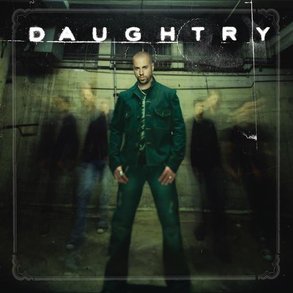
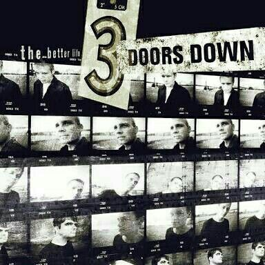
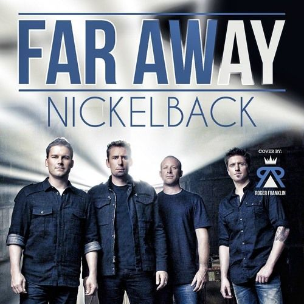
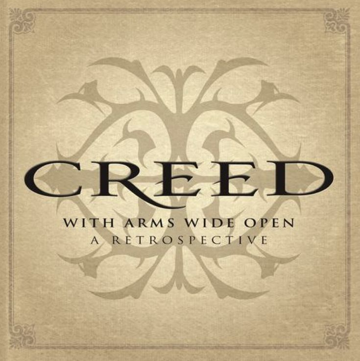
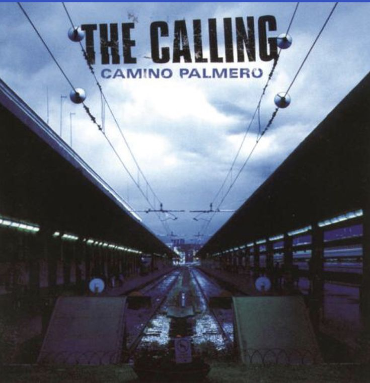

Artist: Daughtry
A soulful post-grunge ballad about finding one's way back to where they belong, featuring powerful, gritty vocals.

Artist: 3 Doors Down
A quintessential post-grunge track that explores the pain of distance and the persistence of memory.

Artist: Nickelback
A melodic and emotional track about the lengths one would go for love and the desire to bridge any gap.
Artist: Hinder
A popular ballad about a late-night phone call from a past love, capturing complicated lingering feelings.

Artist: Creed
An uplifting anthem about reconnection and sacrifice, featuring a soaring chorus and powerful guitar work.

Artist: The Calling
A deep-voiced ballad about eternal devotion and the promise to support a loved one through life's journeys.